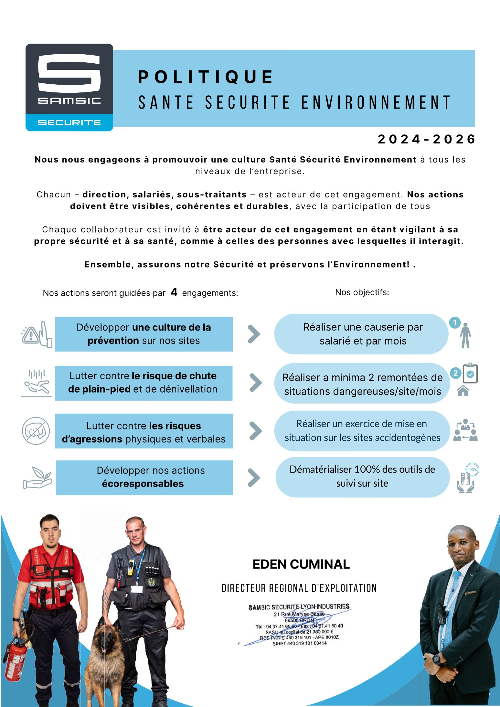

1
01.
Engagement et
politique SSE
Axe 1 · Engagement de la direction
Avant les consignes, il y a un engagement : la direction de SAMSIC Sécurité s’engage par écrit sur la sécurité, la santé et l’environnement, fixe des objectifs chiffrés et définit les rôles et responsabilités de chacun.
Dans cet onglet
- Le MASE en une page À lire
- La politique SSE 2024-2026 À lire
- Engagements, objectifs, indicateurs À remplir
- Rôles et responsabilités en SSE À remplir
- Les 10 règles qui sauvent À lire
Nos essentiels
- Une politique SSE écrite, signée, connue des agents
- Des objectifs SSE mesurables, déclinés sur le site
- Des indicateurs suivis et communiqués
- Une organisation SSE où chacun connaît son rôle
- Des règles incontournables comprises de tous
D’où ça vient, à quoi ça sert
Né dans la pétrochimie
Créé en 1991 à Fos-sur-Mer pour faire baisser les accidents des entreprises
intervenant sur les sites industriels. Aujourd’hui commun avec France Chimie, porté par des associations loi 1901.
Un langage commun
Les entreprises utilisatrices (nos clients) et les entreprises intervenantes (nous)
appliquent le même référentiel : mêmes exigences, mêmes mots, mêmes outils.
Une certification
Un organisme indépendant contrôle les documents et le terrain. Le comité de pilotage
régional décide : certification pour 1 an ou 3 ans.
La clé des sites industriels
Raffineries, chimie, sites Seveso : beaucoup de clients exigent un prestataire certifié.
Sans MASE, pas de marché.
En chiffres
5axes, de l’engagement de la direction à l’amélioration continue
267questions dans la grille d’audit, notées une par une
1 ou 3ans de certification, selon le résultat de l’audit
2fois par an, SAMSIC transmet ses indicateurs SSE à l’association MASE
Et moi, agent, qu’est-ce que ça change ?
- Je connais les risques de mon poste et je sais où est l’analyse des risques du site.
- Je participe aux causeries et je signe la feuille d’émargement.
- Je remonte l’information : situation dangereuse, presqu’accident, incident environnemental, bonne pratique.
- J’applique les consignes, et je m’arrête quand la situation n’est pas celle prévue.
- Si l’on m’interroge sur mon poste, je sais ouvrir ce classeur.
Référence : Système commun MASE / France Chimie, référentiel version 2024. Plus d’informations : mase-asso.fr.

Nos 4 engagements, nos 4 objectifs
| Engagement | Objectif | Mesuré sur le site par | 1er sem. | 2e sem. |
|---|---|---|---|---|
| Développer une culture de la prévention | Une causerie par salarié et par mois | Suivi des causeries sam-agence · onglet 5 | ||
| Lutter contre les chutes de plain-pied et de dénivellation | Au moins 2 remontées de situations dangereuses par site et par mois | Registre des remontées sam-agence · onglet 6 | ||
| Lutter contre les agressions physiques et verbales | Un exercice de mise en situation sur les sites accidentogènes | Exercices et RETEX onglet 7 | ||
| Développer nos actions écoresponsables | Dématérialiser 100 % des outils de suivi sur site | Outils tenus sur sam-agence et Guardtek le classeur papier reste sur le site |
Indicateurs de résultats
| Indicateur | Objectif | 1er semestre | 2e semestre |
|---|---|---|---|
| Accidents avec arrêt sur le siteaccidents du travail déclarés dans sam-agence | 0 | ||
| Taux de fréquence (TF)accidents avec arrêt par million d’heures travaillées | |||
| Taux de gravité (TG)jours d’arrêt par millier d’heures travaillées | |||
| Accueils SSE réalisésagents accueillis / agents arrivés | 100 % | ||
| Habilitations et cartes pro à jour | 100 % | ||
| Audits terrain SSE réalisés sur le site | 1 par trimestre |
Direction régionale d’exploitation
Signe la politique SSE et le DUERP, fixe les objectifs, donne les moyens.
Eden CUMINAL04 37 41 69 90
Responsable d’exploitation
Pilote les sites, valide le plan d’actions, conduit le bilan annuel.
Lilia HANI04 37 41 69 90
Animatrice QSE
Anime la démarche SSE, analyse les remontées, fournit causeries et flashs.
Daniela DIAZ04 37 41 69 90
Chef de site
Accueille les nouveaux, anime les causeries, tient ce classeur, fait les visites terrain.
NomTél.
Chef de poste
Met l’équipe au travail, assure la relève, reçoit en premier les remontées et alertes.
NomsTél. du poste
Chaque agent
Applique les consignes, porte ses EPI, signale tout danger, peut se retirer d’un danger grave.
Parrain désignéTél.
Sauveteurs secouristes (SST)
Donnent les premiers secours en attendant le 15 ou le 18.
Noms sur le siteTél.
CSE et CSSCT
Représentants du personnel pour la santé, la sécurité et les conditions de travail.
NomTél.
Santé au travail
Médecin du travail : visites, aptitude, écoute en cas de difficulté, y compris le stress.
ServiceTél.
Le client
Service HSE ou sûreté du site : plan de prévention, permis, consignes d’urgence.
NomTél.
Affiché au poste de sécurité
Politique SSE signée de l’année
Numéros d’urgence et consignes du site
Consignes incendie et d’évacuation
Inspection du travail et médecin du travail
Modalités d’accès au document unique
Interdiction de fumer et de vapoter
Harcèlement moral et sexuel, référent
Dernier flash SSE
1
Je suis en bonne condition physique et mentale
pour prendre mon travail.
2
Je connais les risques de mon travail
décrits dans le plan de prévention.
3
Je connais et respecte les règlements intérieurs
et les consignes de sécurité du site.
4
Je contrôle et porte les équipements de protection individuels appropriés
et un PTI quand je suis en situation de travailleur isolé.
5
Dans les escaliers, je ne cours pas
et tiens la rampe.
6
Je respecte la signalétique du site
et les voies de circulation autorisées.
7
Je maîtrise mes gestes et mes postures
pendant les différentes situations.
8
J’avertis mon supérieur
de toute situation dégradée, anormale ou dangereuse.
9
Je suis vigilant pour ma sécurité
et celle des autres.
10
Je contrôle le véhicule avant chaque utilisation
Je respecte les limitations de vitesse, je porte la ceinture et ne téléphone pas au volant.